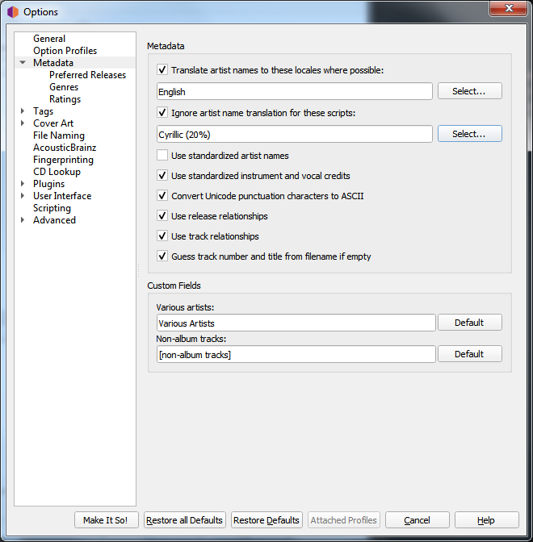
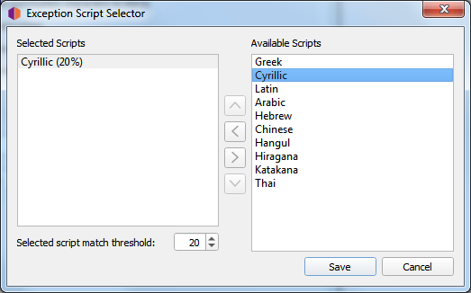

Options de métadonnées¶
{kind=link}
Traduisez les noms d’artistes dans cette langue lorsque cela est possible
Lorsque cette option est cochée, Picard vérifiera chacune des régions sélectionnées afin de voir si un artiste a un alias pour cette région. Si c’est le cas, Picard utilisera cet alias au lieu du nom de l’artiste lors du marquage. Par exemple, si vous avez sélectionné les langues « Anglais (canadien) » et « Anglais (américain) », et qu’il existe des alias pour « Anglais (américain) », « Anglais » et « Grec », alors l’alias « Anglais (américain) » sera utilisé.
Notez que Picard tentera d’utiliser la première correspondance exacte en premier. Par exemple, si vous avez sélectionné les langues « Anglais (Canadien) », « Anglais (US) » et « Grec », et qu’il existe des alias pour « Anglais » et « Grec », alors l’alias « Grec » sera utilisé.
S’il n’y a pas de correspondance exacte avec l’une des locales sélectionnées, alors Picard tentera de trouver une correspondance basée sur la locale racine. Par exemple, si vous avez sélectionné les paramètres locaux « Anglais (canadien) », « Anglais (US) » et « Grec (Chypre) », et qu’il existe des alias pour « Anglais (UK) » et « Grec », alors l’alias « Anglais (UK) » sera utilisé.
Lorsque « Anglais » est la locale sélectionnée, le nom de tri de l’artiste (qui est, selon la directive stylistique, stocké en caractères latins) est utilisé comme solution de rechange s’il n’y a pas d’alias en anglais.
Pour sélectionner les langues à utiliser, cliquez sur le bouton Choisissez… à côté de la liste des langues sélectionnées. Cela fera apparaître une nouvelle fenêtre de dialogue dans laquelle vous pourrez ajouter, supprimer ou réorganiser votre liste de langues sélectionnées.

Lorsque vous êtes satisfait de vos choix, cliquez sur le bouton Sauvez pour transférer la liste dans vos paramètres d’option et fermer la boîte de dialogue. Notez que les modifications ne seront pas enregistrées de façon permanente tant que vous n’aurez pas cliqué sur le bouton Faites-le donc !.
Ignorer la traduction du nom de l’artiste pour le script
Parfois, vous pouvez ne pas vouloir que les noms d’artistes soient traduits s’ils apparaissent dans un certain jeu de caractères. Lorsque cette option est cochée, elle indique à Picard de ne pas effectuer la traduction du nom de l’artiste s’il est écrit avec l’un des scripts sélectionnés.
Chaque script sélectionné comprend une valeur seuil de correspondance utilisée pour déterminer si ce script doit être utilisé. Lorsqu’un nom d’artiste est évalué pour déterminer s’il correspond à l’un de vos scripts sélectionnés, il est d’abord analysé pour déterminer quels scripts sont représentés dans le nom, et quel pourcentage pondéré du nom appartient à chaque script. Ensuite, chacun des scripts sélectionnés est vérifié et si le nom contient des caractères appartenant au script et que le pourcentage de caractères du script dans le nom atteint ou dépasse le seuil de correspondance spécifié pour le script, alors le nom d’artiste ne sera pas traduit.
Par exemple, si l’option « Traduire les noms d’artistes » est activée avec les paramètres régionaux « anglais » et que vous activez l’option « Ignorer la traduction des noms d’artistes » avec les scripts « grec (30 %) » et « cyrillique (50 %) », tous les noms d’artistes contenant 30 % de caractères grecs ou 50 % de caractères cyrilliques ne seront pas traduits et apparaîtront dans leur forme d’origine.
Pour sélectionner les scripts de jeu de caractères à utiliser et leurs seuils de pondération, cliquez sur le bouton Choisissez… à côté de la liste des scripts sélectionnés. Cela fera apparaître une nouvelle fenêtre de dialogue dans laquelle vous pourrez ajouter, modifier ou supprimer des éléments dans votre liste de scripts sélectionnés.
Lorsque vous êtes satisfait de vos choix, cliquez sur le bouton Sauvez pour transférer la liste dans vos paramètres d’option et fermer la boîte de dialogue. Notez que les modifications ne seront pas enregistrées de façon permanente tant que vous n’aurez pas cliqué sur le bouton Faites-le donc !.
{kind=link}
Utilisez des noms d’artistes standardisés
Cochez pour n’utiliser que des noms d’artistes standard, plutôt que des crédits d’artiste qui peuvent différer légèrement selon les pistes et les versions.
Note
Si l’option « Traduire les noms d’artistes » ci-dessus est également cochée, elle remplacera cette option si un alias approprié est trouvé.
Utilisez des crédits d’instruments et vocaux standardisés
Cochez pour n’utiliser que des noms standard pour les instruments et les voix dans les relations interprètes. Décochez pour utiliser les instruments et les voix comme crédités dans la relation.
Convertir les caractères de ponctuation Unicode en ASCII
Convertit les caractères de ponctuation Unicode des données MusicBrainz en ASCII pour une utilisation cohérente de la ponctuation dans les balises. Par exemple, les guillemets simples droits sont convertis en apostrophes ASCII (“) et les ellipses horizontales sont converties en trois points (…).
Utiliser les relations de version
Cochez pour récupérer et écrire les relations au niveau de la version (par exemple: URL, compositeur, parolier, interprète, chef d’orchestre ou mixeur DJ) dans vos fichiers. Vous devez l’activer pour utiliser Picard pour récupérer l’art de couverture.
Utiliser les relations de suivi
Cochez pour écrire des relations au niveau de la piste (par exemple: compositeur, parolier, interprète ou remixeur) dans vos fichiers.
Déterminez le numéro de la piste et le titre à partir du nom du fichier s’il est vide
Si cette option est cochée, Picard essaiera de deviner le numéro de la piste ou le titre d’un fichier à partir du nom du fichier si la balise
tracknumberoutitleest vide.
Artistes variés
Choisissez comment vous voulez que l’artiste « Various Artists » soit orthographié.
Pistes hors album
Choisissez la manière dont vous souhaitez regrouper les « pistes hors album ».
Voir aussi
Détails: Versions préférées / Genres / Évaluations